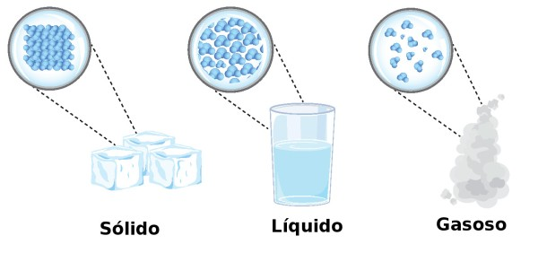

Aula de Química
Prof. Eduardo
Ementa:
- Introdução a Química
- As transformações da matéria
- Como a matéria se apresenta
- Processos de saparação
- Evolução dos Modelos Atômicos
- Modelo atômico de Dalton
- Modelo atômico de Thomson
- Modelo atômico de Rutherford
- Modelo atômico de Rutherford-Bohr
- Tabela Periódica
- Histórico
- Classificação periódica dos elementos
- Propriedades periódicas
- Tabela Periódica
- Histórico
- Classificação periódica dos elementos
- Propriedades periódicas
- Ligações Químicas
- Ligação metálica
- Ligação iônica
- Ligação covalente
Introdução a Química
As transformações da matéria
Desde o ínicio da civilização até hoje, a humanidade pôde observar que a natureza é formada por materiais muito diferentes entre si. Todos os materiais que nos rodeiam constituem o que chamamos matéria.
Matéria é tudo que tem massa e ocupa lugar no espaço (volume).
A matéria pode se apresentar basicamente em três estados físicos: sólido, líquido e gasoso.
